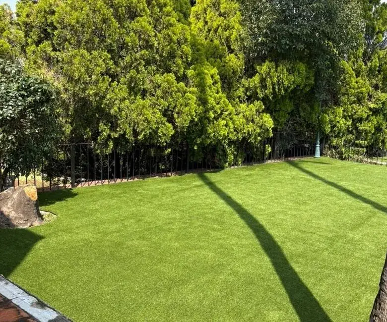
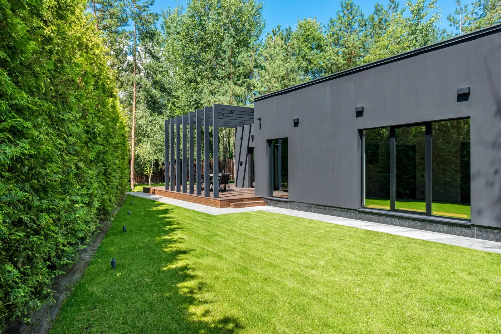
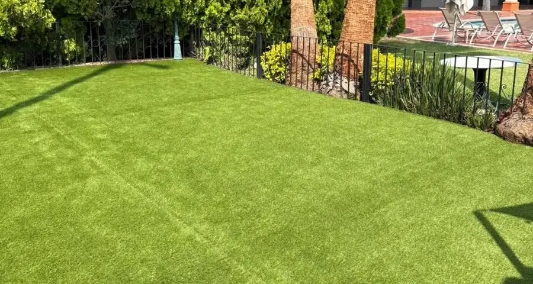
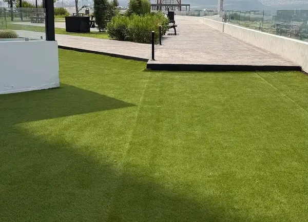
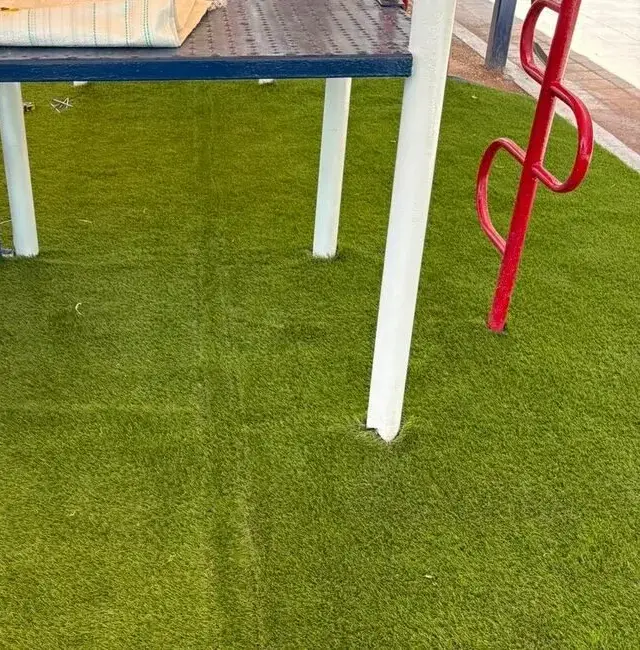
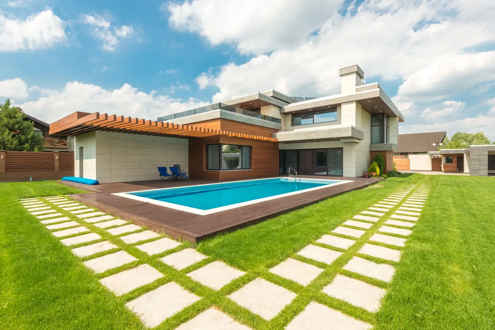
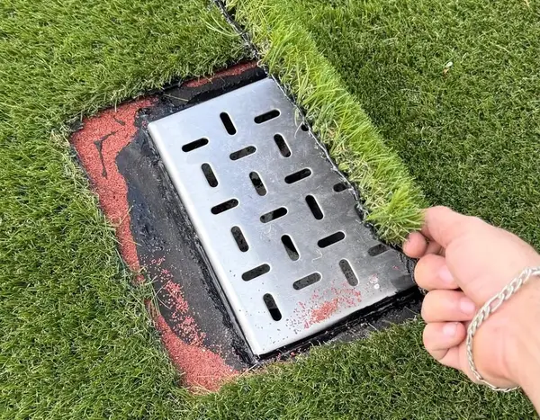
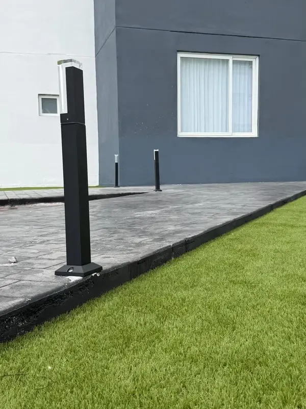

Jardín y patio
La instalación más común. Para caminar descalzo, fibra de 30 a 40 mm con hilo rizado.

Verde los 365 días en jardines, terrazas, albercas y patios. Sin riego, sin poda y sin lodo.
365 Verde es la línea residencial de Game Turf: el mismo equipo que construye canchas en Querétaro, ahora en jardines y patios de casa.
Cada proyecto empieza midiendo el lugar. Tierra suelta, losa o desnivel: con eso se eligen la altura del pasto, la base y la salida del agua.

Sobre tierra va con base de grava compactada. Sobre concreto se fija al firme y respeta pendientes y coladeras.

La instalación más común. Para caminar descalzo, fibra de 30 a 40 mm con hilo rizado.

Sobre losa, sin tierra y sin perforar el impermeabilizante.
Fibra corta y densa de 20 a 25 mm y respaldo perforado para que drene la orina. Un enjuague a la semana en la zona de uso.

Con amortiguante bajo columpios y resbaladillas. Sin piedras ni lodo, listo al rato de que llueve.

No astilla como la madera ni resbala como el concreto mojado. El agua escurre por el respaldo permeable.
Lo que no se ve decide si el pasto se ondula o se encharca al año.
Medimos las áreas, revisamos si es tierra o concreto y hacia dónde corre el agua.
Se compacta una base de grava con pendiente y quedan accesibles registros y coladeras.
El pasto va en un solo sentido, con juntas pegadas y orillas rematadas contra jardineras y andadores.
Se levanta la fibra, se pone relleno si el uso lo pide y te explicamos cómo cuidarlo.


Mide largo y ancho. Si tu jardín tiene forma de L, divídelo en dos rectángulos.
0 m²
Escribe las medidas para ver el total.
Referencia de mercado, no tarifa de Game Turf: en México el pasto sintético instalado cuesta entre 200 y 550 pesos por m², según el promedio nacional de Cronoshare (enero de 2026). Las áreas chicas salen más caras por metro.
Con estos cuidados, un pasto sintético de casa dura de 10 a 15 años.
Contra el sentido de la fibra, con soplador o rastrillo de plástico. En pasillos de paso, más seguido.
Un chorro de agua a la semana evita el olor. El respaldo perforado deja pasar el líquido.
Al sol se calienta: en una prueba de la Universidad Estatal de Pensilvania llegó a 68.7 °C contra 35.2 °C del pasto natural. Un árbol o una pérgola lo resuelven.
365 Verde es la línea residencial de Game Turf. Mismo equipo de instalación y mismos datos de contacto; Game Turf atiende canchas deportivas y 365 Verde jardines, terrazas, albercas y patios de casa.
Según el promedio nacional de Cronoshare (enero de 2026), entre 200 y 550 pesos por m² instalado. El precio real depende de los metros, el suelo, la base y los remates. Game Turf da el número exacto tras ver medidas y fotos, sin costo.
Un jardín típico, dos o tres días de obra. Azoteas o terrenos con desnivel pueden tardar más por el trabajo de base y drenaje.
Sí, si el firme tiene pendiente y salida de agua. En losa se fija sin perforar el impermeabilizante. Sobre tierra primero se retira la capa suelta y se compacta una base de grava.
Sí: fibra corta y densa de 20 a 25 mm, respaldo perforado para que drene la orina y un enjuague semanal en la zona de uso. Con varios perros conviene un relleno mineral contra el olor.
Sí. En una prueba de la Universidad Estatal de Pensilvania llegó a 68.7 °C, contra 35.2 °C del pasto natural. Mojarlo lo enfría por poco tiempo; en zonas de estar conviene sombra.
Sí, en todo México. Manda la ciudad, los metros aproximados y unas fotos por el formulario o al WhatsApp 442 344 5554.
Mándanos la ciudad, los metros aproximados y, si puedes, unas fotos. La cotización no tiene costo.
El equipo de Game Turf te contacta para la cotización. Si quieres adelantar, mándanos fotos del lugar por WhatsApp con tus datos ya escritos.
Seguir por WhatsApp